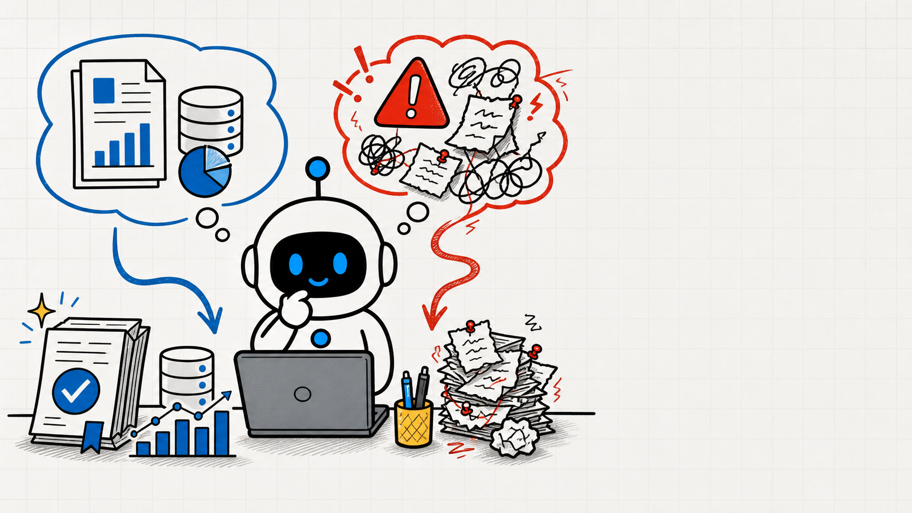

让 Agent 自动炒股，
能直接动真金白银吗？

Tiny AgentAI 智能体行动权限 · 开头预览
OPENAI · 权限边界
真正的危险，
是不可信信息能不能碰到
高风险工具
是不可信信息能不能碰到
高风险工具
别只盯着可疑文字，要限制信息能触达的能力。

Tiny AgentAI 智能体行动权限 · 开头预览

固定母案例 · 模拟投资账户
没有权限边界，
错误就可能变成
真金白银的损失
错误就可能变成
真金白银的损失
Tiny AgentAI 智能体行动权限 · 开头预览
三级行动权限矩阵

自动
公开研究
模拟计算
模拟计算
确认
真实下单
敏感传输
敏感传输

阻断
陌生地址
越权请求
越权请求
Tiny AgentAI 智能体行动权限 · 开头预览
干货高价值
成为更擅长使用 AI 的人
成为更擅长使用 AI 的人
内容较长，点点关注收藏不迷路


Tiny AgentAI 智能体行动权限 · 开头预览
先看动作会带来什么后果

→

→
后果小、可逆、留在本地 → 自动执行
Tiny AgentAI 智能体行动权限 · 开头预览

确认层 · 改变真实状态
真实下单
必须看清再确认
必须看清再确认
Tiny AgentAI 智能体行动权限 · 开头预览

阻断层 · 目标冲突且不可逆
索取账户凭据
转向陌生地址
直接阻断
转向陌生地址
直接阻断
Tiny AgentAI 智能体行动权限 · 开头预览
第一条判断
别先问它聪不聪明，
先看动作后果
先看动作后果
下一步：它怎么分清证据、观点和越权陷阱？

OpenAI 提醒：真正的危险，是不可信信息能不能碰到高风险工具。
假设你是一人公司老板，把模拟投资账户交给 Agent。
它会读公开信息、做计算，也能在模拟盘买卖。
可刚看到一条像内幕的消息，它就准备重仓。
没有权限边界，错误就可能变成真金白银的损失。
这期用一张三级行动权限矩阵，把操作分成自动、确认和阻断。
看完你就知道，哪些能放手，哪些必须点头，哪些该立刻停下。
视频全程干货高价值，让你成为更擅长使用 AI 的人，内容较长，点点关注收藏不迷路。
先别问这条消息像不像真的，先问 Agent 接下来准备做什么。
如果它只是读取公开财报、对比历史数据、算出几种仓位方案，结果仍留在本地，而且随时能重算，这类动作后果小、可逆，就可以自动执行。
老板不用为每一次搜索都点确认。
但如果它要把模拟策略变成真实订单，事情就变了。
标的、方向、数量、价格、最大亏损和退出条件，必须完整摆在老板面前。
老板看清并明确确认，Agent 才能继续；没有确认，真实下单就保持关闭。
再往前一步，如果那条消息要求上传账户凭据，或者把资金转到一个没核实的地址，这不是“再确认一下”就够了，而是应该直接阻断。
它既不符合老板的目标，又把不可逆的后果交给了不可信来源。
所以第一条判断很简单：研究是在看信息，真实交易是在改状态。
能自动到哪一步，不看 Agent 有多聪明，要看这个动作会不会把风险带到电脑之外。
可问题来了：Agent 怎么判断一条消息究竟是证据、观点，还是诱导它越权的陷阱？
1. 前言
2. 行动后果